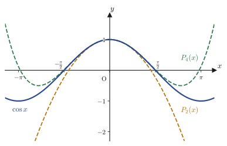
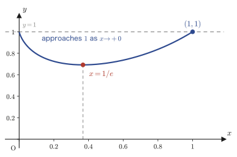

Chapter 4Taylor's Theorem and Expansions of Functions
In the preceding chapters we have acquired the full range of techniques for finding the derivative (“the function that assigns to each point the derivative at that point”) of the main elementary functions: polynomials, exponential functions, logarithmic functions, trigonometric functions, and hyperbolic functions. However, the derivative by itself only tells us “the rate of change at that single point,” and we do not yet have the tools to answer questions about the overall shape of the graph of a function—for example, “about how large is $e^x$ when $x=0.1$?” or “what polynomial approximates $\cos x$ near $x=0$?”
In this chapter we study one of the most widely applicable theorems in calculus—Taylor's theorem (named after the British mathematician Brook Taylor)—which approximates a function $f(x)$ “by a polynomial” using only the value of the function at a single point $x=a$ and the values of its derivatives of all orders at that point. Taylor's theorem extends the mean value theorem we learned in Chapter 2 from “first order” to “$n$th order,” and by taking the limit $n\to\infty$ it opens the door to expressing a function as an infinite series (the Taylor expansion and the Maclaurin expansion). As applications, we treat the power series representations of the exponential and trigonometric functions, Euler's formula that connects them, the computation of limits, and finally the conditions on higher-order derivatives for deciding whether a function has an extremum.
- Taylor's theorem: $f(x)=f(a)+\dfrac{f'(a)}{1!}(x-a)+\cdots+\dfrac{f^{(n)}(a)}{n!}(x-a)^n+R_{n+1}$, and the Lagrange form of the remainder $R_{n+1}$, which expresses the error
- The flow of the derivation: starting from the first-order approximation (the tangent-line approximation) and extending it inductively, by integration, to the second-, third-, …, and $n$th-order approximations
- The definitions of the Taylor expansion and the Maclaurin expansion, and the derivation of the Maclaurin expansions of $e^x$, $\sin x$, and $\cos x$
- How to derive Euler's formula $e^{ix}=\cos x+i\sin x$ by substituting into power series term by term, and the logical point of caution hidden in this argument
- How to use Taylor expansion to find “$0^0$-type” limits such as $\displaystyle\lim_{x\to+0}x^x=1$
- The general formula for the $n$th derivative (of $\sin x$ and $\cos x$), and Leibniz's rule for finding higher-order derivatives of a product
- Criteria for extrema using higher-order derivatives: deciding whether an extremum exists when $f'(a)=\cdots=f^{(n-1)}(a)=0$ and $f^{(n)}(a)\neq0$
Source notes: Yasuhide Mochizuki, Mathematics Notes: Calculus, pp. 30–38.
4.1 Taylor's Theorem — From First-Order to General-Order Approximation
What we learned through Chapter 3 is that “the value $f'(a)$ of the derivative of a function $f(x)$ at $x=a$ is the slope of the tangent line there.” The tangent line is the line (a linear expression) that comes closest to $f(x)$ near $x=a$. Then can we not raise the accuracy of the approximation step by step, using a parabola (a quadratic expression) that is closer to $f(x)$ than the tangent line, then a still closer cubic expression, and so on? In this section we derive the answer to this question—Taylor's theorem—by a constructive method that follows the original notes: we start from the first-order approximation and raise the degree one step at a time.
Math Note: A preview of the integral symbol
In the discussion below we use the symbol $\displaystyle\int$ for integration (the integral), the inverse operation of differentiation. Integration itself will be defined formally in Chapter 5, but here we use only the following facts, which we learned in high school mathematics (Mathematics III, a course in the Japanese high-school curriculum).
(i) $\displaystyle\int_a^{b} f'(x)\,dx = f(b)-f(a)$ (the fundamental theorem of calculus: integrating $f'(x)$ gives back the increment of the original $f(x)$).
(ii) The integral of a constant $c$ is $\displaystyle\int c\,dx=cx+C$, the integral of $(x-a)$ is $\displaystyle\int (x-a)\,dx=\frac{1}{2}(x-a)^2+C$, and in general $\displaystyle\int (x-a)^k\,dx=\frac{(x-a)^{k+1}}{k+1}+C$ ($C$ is the constant of integration). Here $a$ is treated as a constant, so note that $f'(a)$, $f''(a)$, and so on are also mere constants (they do not depend on $x$).
4.1.1 First-order approximation — rebuilding the tangent-line approximation from the integral
Suppose that the function $f(x)$ is differentiable on an interval containing $x=a$. Applying the fundamental theorem (i) with $b=a+h$, we get
$$ f(a+h) = f(a) + \int_a^{a+h} f'(x)\,dx \qquad\cdots① $$Now let us replace the integrand $f'(x)$ by the simplest approximation on the interval of integration $[a,a+h]$—“regard it as constant, remaining at its value $f'(a)$ at $x=a$.” If $h$ is sufficiently small, $f'(x)$ should hardly change within the interval, so this is a plausible approximation. Then the integral in ① can be computed immediately by the first formula in (ii), and we obtain
$$ \int_a^{a+h} f'(a)\,dx = f'(a)\cdot h $$(Since $f'(a)$ is a constant, $\int_a^{a+h} f'(a)\,dx = f'(a)\underbrace{\int_a^{a+h}dx}_{=\,h} = f'(a)\,h$.) Substituting this into ①, we get
$$ f(a+h) \fallingdotseq f(a) + h\,f'(a) \qquad(\text{first-order approximation}) $$Here the symbol “$\fallingdotseq$” means “approximately equal” (a notation peculiar to the original notes for this chapter: an $=$ with one small dot added above it). Further, setting $x=a+h$ (that is, $h=x-a$) and rewriting, we can express this using only $x$, without $h$.
This is exactly the “equation of the tangent line” that we learned in high school mathematics.
Intuition: The first-order approximation and its error
Figure 4.1 illustrates the meaning of the first-order approximation ②. Draw the tangent line to the curve $y=f(x)$ at the point $(a,f(a))$, and move along the tangent line to the point $x=a+h$, advancing $x$ from $a$ by $h$. We move horizontally by $h$ (the blue horizontal arrow), and then rise vertically by $h\cdot f'(a)$ according to the slope $f'(a)$ of the tangent line (the blue vertical arrow). The height on the tangent line reached in this way is the right-hand side $f(a)+h f'(a)$ of ②. The actual height $f(a+h)$ of the curve, however, does not in general coincide with this. When the curve lies below the tangent line (is concave down), as in the figure, the tangent line overestimates the actual value, and the difference (the red arrow, labeled $R$) is the error of the approximation. The smaller $h$ is, the smaller the error $R$ is, but we want to estimate by a formula “how small” it is for a fixed $h$—this is the goal from the next subsection onward.
4.1.2 Second-order approximation — substituting the first-order approximation into the integral
The first-order approximation ② uses only information about $f'(x)$. To raise the accuracy, it suffices to approximate $f'(x)$ itself to first order as well. Applying ② to $f'$ in place of $f$ (note that differentiating $f'$ gives $f''$), we get
$$ f'(x)\fallingdotseq f'(a)+(x-a)\cdot f''(a) \qquad\cdots③ $$Caution: Correspondence of the letters $a$ and $X$
In “Theorem 4.1” below, the right endpoint of the interval is written $X$, but in the explanation here we proceed by setting $a=a$ and $X=a+h$. Please note that the same letter $a$ is used consistently in the same role, that of the “center of the approximation.”
We substitute ③ into ①. If we replace the integrand $f'(x)$ in ① by the right-hand side of ③ (a linear expression in $x$), we get
$$ f(a+h)\fallingdotseq f(a) + \int_a^{a+h}\bigl\{f'(a)+(x-a)\cdot f''(a)\bigr\}\,dx $$The integral on the right-hand side, using the formulas in (ii) term by term, can be computed as
$$ f(a)+\int_a^{a+h}\bigl\{f'(a)+(x-a)\cdot f''(a)\bigr\}\,dx = f(a)+\left[f'(a)\cdot x + f''(a)\left(\frac{1}{2}x^2-ax\right)\right]_a^{a+h} $$(since $f'(a)$ and $f''(a)$ are constants, we took them outside the integral, and we used $\int(x-a)\,dx=\int x\,dx - a\int dx = \tfrac12 x^2-ax+C$). What remains is only to subtract the value at the lower limit $x=a$ from the value at the upper limit $x=a+h$. The term containing $f'(a)$ immediately simplifies to $f'(a)\{(a+h)-a\}=f'(a)\,h$. The term containing $f''(a)$ looks a little more involved, but we have
$$ \left(\frac{1}{2}(a+h)^2-a(a+h)\right)-\left(\frac{1}{2}a^2-a^2\right) =\frac{1}{2}\Bigl\{(a+h)^2-2a(a+h)+a^2\Bigr\} =\frac{1}{2}\bigl\{(a+h)-a\bigr\}^2=\frac{h^2}{2} $$Here $(a+h)^2-2a(a+h)+a^2$ collapses into the perfect square $\{(a+h)-a\}^2$ (we have merely put $X=a+h$ into $X^2-2aX+a^2=(X-a)^2$), and once we notice this, the term settles neatly to $h^2/2$. Summarizing the above,
$$ \therefore\ f(a+h)\fallingdotseq f(a)+h\cdot f'(a)+\frac{1}{2!}\cdot h^2\cdot f''(a) \qquad(\text{second-order approximation}) $$we obtain the second-order approximation. Setting $x=a+h$ once more and rewriting this as an expression in $x$, we get
This corresponds to what is called “approximation of a graph by a quadratic function (parabolic approximation)” in high school mathematics. To produce ⑤, we use the same substitution operation as when we produced ③ from ②. ④ is none other than the result of substituting $g=f$ into the approximation pattern
$$ g(x)\fallingdotseq g(a)+g'(a)\cdot(x-a)+\frac{g''(a)}{2}\cdot(x-a)^2 $$which holds for any (twice differentiable) function $g$. So we substitute $g=f'$ into the same pattern (note that this gives $g'=f''$ and $g''=f'''$), and obtain
$$ f'(x)\fallingdotseq f'(a)+f''(a)\cdot(x-a)+\frac{f'''(a)}{2}\cdot(x-a)^2 \qquad\cdots⑤ $$(Note that differentiating ④ directly with respect to $a$, regarding $a$ as the variable, does not give ⑤—if we differentiate the right-hand side of ④ with respect to $a$ while keeping $x$ fixed, we get a different expression, $\frac{f'''(a)}{2}(x-a)^2$. ⑤ is obtained solely by the substitution operation of “replacing $f$ by $f'$.”)
4.1.3 Third-order approximation, and on to the general $n$th-order approximation
This time we substitute ⑤ into ①. Repeating the same computation (integrate with $f'(a)$, $f''(a)$, $f'''(a)$ treated as constants, substitute the upper and lower limits, and collect the result into the perfect-cube form $\{(a+h)-a\}^3=h^3$), we get
$$ f(a+h)\fallingdotseq f(a)+\int_a^{a+h}\left\{f'(a)+f''(a)(x-a)+\frac{f'''(a)}{2}(x-a)^2\right\}dx = f(a)+\left[f'(a)x+f''(a)\left(\frac{1}{2}x^2-ax\right)+\frac{f'''(a)}{2}\left(\frac{1}{3}x^3-ax^2+a^2x\right)\right]_a^{a+h} $$and computing the difference between the upper and lower limits gives
$$ \therefore\ f(a+h)\fallingdotseq f(a)+h f'(a)+\frac{h^2}{2!}f''(a)+\frac{h^3}{3!}f'''(a)\qquad(\text{third-order approximation}) $$Rewriting this in the form with $x=a+h$, we have
$$ f(x)\fallingdotseq f(a)+f'(a)(x-a)+\frac{f''(a)}{2!}(x-a)^2+\frac{f'''(a)}{3!}(x-a)^3 $$The flow so far—“differentiate the formula for the $k$th-order approximation to make a linear expression containing derivatives up to order $k+1$ (corresponding to ③ and ⑤), substitute it into ①, and integrate one more level”—can be repeated in exactly the same form whatever $k$ is. In fact, this can be justified by mathematical induction (the proof technique, already learned in high school mathematics, of “verifying that the statement holds for $k=1$, and showing that if it holds for $k$ then it also holds for $k+1$”); the margin of the original notes also carries the remark “prove by mathematical induction.” Raising the degree indefinitely in this way, we obtain an approximation of the form
$$ f(a+h)\fallingdotseq f(a)+h\cdot f'(a)+\frac{h^2}{2!}\cdot f''(a)+\cdots+\frac{h^n}{n!}\cdot f^{(n)}(a) $$However, this “$\fallingdotseq$” is an approximation, not an equality. How accurate is it, and how can the error be written? The last piece that makes a strict equality hold here is the following remainder term.
Check: The remainder term $R_{n+1}$
To turn the approximation above into an equation, it suffices to add the error term $R_{n+1}$ at the end. Specifically, there exists some $\xi$ ($a \lt \xi \lt a+h$) such that the following holds:
$$ R_{n+1} = \frac{h^{n+1}}{(n+1)!}\cdot f^{(n+1)}(\xi) $$This is called the Lagrange form of the remainder (also called the Lagrange remainder; named after the French mathematician Joseph-Louis Lagrange). $R_{n+1}$ stands for the part cut off at the $n$th-order approximation—“the part that actually also depends on information from $f^{(n+1)}$ onward”—and its size is exactly the error.
Setting $x=a+h$ and returning to an expression in $x$, we obtain the following theorem.
Theorem 4.1: Taylor's theorem
Suppose that the functions $f(x),f'(x),\ldots,f^{(n)}(x)$ are continuous on the closed interval $[a,X]$, and that $f^{(n)}(x)$ is moreover differentiable on the open interval $(a,X)$ (that is, $f^{(n+1)}(x)$ exists). Then there exists a value $c$ ($a \lt c \lt X$) such that
\begin{equation} f(X) = f(a) + \frac{f'(a)}{1!}(X-a) + \frac{f''(a)}{2!}(X-a)^2 + \cdots + \frac{f^{(n)}(a)}{n!}(X-a)^n + R_{n+1} \label{eq:4-taylor-thm} \end{equation}holds, where
\begin{equation} R_{n+1} = \frac{f^{(n+1)}(c)}{(n+1)!}(X-a)^{n+1} \qquad(a \lt c \lt X) \label{eq:4-remainder} \end{equation}(Sometimes $X$ is written as $x$ and $c$ as $\xi$.)
This result asserts that a point $c$ is guaranteed to exist, and it is a proposition that requires proof; it is a theorem, not a definition. For that reason, this book presented it as a “theorem” from the very beginning.
Bonus: Taylor's theorem extends the mean value theorem
Writing out Eq. \eqref{eq:4-taylor-thm} for $n=0$ gives $f(X)=f(a)+f'(c)(X-a)$ ($a \lt c \lt X$). This is exactly the mean value theorem that we learned in Chapter 2. In other words, Taylor's theorem extends the mean value theorem from “first order” to “$n$th order,” and the larger $n$ is, the finer the approximation we get, one that uses information from derivatives of higher order.
Example 4.1: Approximate value of $e^{0.1}$ and an estimate of the error
Using Taylor's theorem, construct the approximating polynomial for the case $f(x)=e^x$, $a=0$, $X=0.1$, $n=2$, and find an approximate value of $e^{0.1}$. Then use the Lagrange remainder to estimate an upper bound for the error, and compare it with the actual error.
Solution. Since $f(x)=e^x$ satisfies $f^{(k)}(x)=e^x$ no matter how many times we differentiate it, $f(0)=f'(0)=f''(0)=1$. By Theorem 4.1 ($n=2$, $a=0$, $X=x$),
\begin{equation} e^x = 1+x+\frac{x^2}{2!}+R_3,\qquad R_3=\frac{f'''(c)}{3!}x^3=\frac{e^{c}}{6}x^3\quad(0 \lt c \lt x) \label{eq:4-quad-approx} \end{equation}When we substitute $x=0.1$, the value of the second-order approximating polynomial is
$$ P_2(0.1)=1+0.1+\frac{0.1^2}{2}=1+0.1+0.005=1.105 $$For the upper bound on the error, note that on the range $0 \lt c \lt 0.1$ the quantity $e^{c}$ is largest when $c\to0.1$ (because $e^x$ is monotonically increasing), so using $e^{c} \lt e^{0.1}$ we can estimate
$$ |R_3| = \frac{e^{c}}{6}\times0.1^3 \lt \frac{e^{0.1}}{6}\times0.001 = 1.8420\times10^{-4} $$(We used $e^{0.1}=1.10517\ldots$. Note that this estimate uses the value $e^{0.1}$ of the very quantity we are trying to find, so in practice one often uses a cruder upper bound such as $e^{0.1} \lt e^{0.2} \lt 1.3$; here, however, we used the exact value in order to get a feel for the size of the error.) Since in fact $e^{0.1}=1.105170918\ldots$, the true error is
$$ e^{0.1}-P_2(0.1) = 1.105170918\ldots-1.105 = 0.000170918\ldots $$which is indeed smaller than the upper bound $1.8420\times10^{-4}$. We can see that raising the order by just one (compared with the first-order approximation, whose error was of order $0.1$) reduces the error all at once to the order of $10^{-4}$. (Verified with SymPy in Python.)
4.2 Taylor and Maclaurin Expansions and Concrete Examples
4.2.1 Definitions of the Taylor and Maclaurin expansions
If we keep increasing $n$ in Theorem 4.1, we naturally wonder what happens to the remainder term $R_{n+1}$ as $n\to\infty$. If $R_{n+1}\to0$, the approximation becomes arbitrarily good, and the equality
Definition 4.1: Taylor expansion
If a function $f(x)$ is differentiable any number of times on some interval containing $x=a$ and satisfies $\displaystyle\lim_{n\to\infty}R_{n+1}=0$, then it can be expressed as
$$ f(x) = f(a)+\frac{f'(a)}{1!}(x-a)+\frac{f''(a)}{2!}(x-a)^2+\cdots+\frac{f^{(n)}(a)}{n!}(x-a)^n+\cdots =\sum_{n=0}^{\infty}\frac{f^{(n)}(a)}{n!}(x-a)^n $$This is called the Taylor expansion of $f(x)$ about $x=a$. The right-hand side is a sum of infinitely many terms (a series), and it is written using $\Sigma$ (sigma, the summation symbol, which means “add from $n=0$ to $\infty$”).
holds. Note that Taylor's theorem (the equality that is cut off at a finite $n$ and retains the error $R_{n+1}$) and the Taylor expansion (the assertion that equality holds exactly for the infinite series as $n\to\infty$) are similar but different things. The former always holds (as long as $f$ is sufficiently smooth), whereas the latter requires the additional condition $R_{n+1}\to0$.
Definition 4.2: Maclaurin expansion
The special case of the Taylor expansion in which the center is taken at the origin, $a=0$, is called the Maclaurin expansion (named after the Scottish mathematician Colin Maclaurin). That is,
$$ f(x) = \sum_{n=0}^{\infty}\frac{f^{(n)}(0)}{n!}\cdot x^n = f(0)+\frac{f'(0)}{1!}x+\frac{f''(0)}{2!}x^2+\cdots+\frac{f^{(n)}(0)}{n!}x^n+\cdots $$is the Maclaurin expansion.
The Maclaurin expansion is merely “the Taylor expansion in the case $a=0$,” but since only the derivatives at $x=0$ are needed, the computation often becomes simpler, and from here on we use this form almost exclusively.
4.2.2 Concrete examples: the Maclaurin expansions of $e^x$, $\sin x$, and $\cos x$
Derivation: The Maclaurin expansion of $e^x$
Let $f(x)=e^x$. Since $e^x$ returns to $e^x$ itself no matter how many times it is differentiated (the result of Chapter 3), $f(0)=f'(0)=f''(0)=\cdots=f^{(n)}(0)=1$. Therefore, by the Maclaurin expansion (Definition 4.2), we obtain
\begin{equation} e^x = 1+\frac{x}{1!}+\frac{x^2}{2!}+\frac{x^3}{3!}+\cdots+\frac{x^n}{n!}+\cdots \label{eq:4-exp-series} \end{equation}(One can show that this series converges for every real number $x$ and that $R_{n+1}\to0$. We omit the proof because it goes beyond the scope of this chapter, but intuitively it should be plausible, since the factorial in the denominator of the remainder term $R_{n+1}=\frac{e^{c}}{(n+1)!}x^{n+1}$ grows much faster than the numerator.)
Derivation: The Maclaurin expansion of $\sin x$
Let $f(x)=\sin x$. Computing the derivatives up to high order (using the fact that $\sin$ and $\cos$ return periodically after every four differentiations), we obtain
$$ f(0)=\sin 0=0,\qquad f'(0)=\cos 0=1 $$ $$ f''(0)=-\sin 0=0,\qquad f^{(3)}(0)=-\cos 0=-1 $$ $$ f^{(4)}(0)=\sin 0=0,\qquad f^{(5)}(0)=\cos 0=1,\qquad\vdots $$In other words, the derivatives of even order are all $0$, while the derivatives of odd order alternate in sign: $1,-1,1,-1,\ldots$. By the Maclaurin expansion,
$$ \sin x = 0+\frac{1}{1!}x^1+\frac{0}{2!}x^2+\frac{-1}{3!}x^3+\frac{0}{4!}x^4+\frac{1}{5!}x^5+\cdots = x-\frac{x^3}{3!}+\frac{x^5}{5!}-\frac{x^7}{7!}+\cdots $$Noting that all the terms of even degree are $0$ and vanish, if we collect only the terms of odd degree using $\Sigma$, we can write
\begin{equation} \sin x = \sum_{n=0}^{\infty}\frac{(-1)^n}{(2n+1)!}\,x^{2n+1} \label{eq:4-sin-series} \end{equation}(Verify that, for $n=0,1,2,\ldots$, the exponent $2n+1=1,3,5,\ldots$ generates only odd numbers.)
Derivation: The Maclaurin expansion of $\cos x$
Similarly, letting $f(x)=\cos x$, we obtain
$$ f(0)=\cos 0=1,\qquad f'(0)=-\sin 0=0 $$ $$ f''(0)=-\cos 0=-1,\qquad f^{(3)}(0)=\sin 0=0 $$ $$ f^{(4)}(0)=\cos 0=1,\qquad f^{(5)}(0)=-\sin 0=0,\qquad\vdots $$This time the derivatives of odd order are all $0$, while those of even order are $1,-1,1,-1,\ldots$. By the Maclaurin expansion,
$$ \cos x = 1+\frac{0}{1!}x+\frac{-1}{2!}x^2+\frac{0}{3!}x^3+\frac{1}{4!}x^4+\frac{0}{5!}x^5+\cdots =1-\frac{x^2}{2!}+\frac{x^4}{4!}-\frac{x^6}{6!}+\cdots $$that is,
\begin{equation} \cos x = \sum_{n=0}^{\infty}\frac{(-1)^n}{(2n)!}\,x^{2n} \label{eq:4-cos-series} \end{equation}holds.
Example 4.2: Second- and fourth-order approximating polynomials of $\cos x$ and their graph
Using Eq. \eqref{eq:4-cos-series}, find the second-order approximating polynomial $P_2(x)$ and the fourth-order approximating polynomial $P_4(x)$ of $\cos x$ about $x=0$. Then use a graph to confirm how the approximation breaks down as $x$ moves away from $0$.
Solution. Taking the terms of Eq. \eqref{eq:4-cos-series} up to $n=0,1$ (the $x^0,x^2$ terms) gives
$$ P_2(x) = 1-\frac{x^2}{2} $$and taking the terms up to $n=0,1,2$ (the $x^0,x^2,x^4$ terms) gives
$$ P_4(x) = 1-\frac{x^2}{2}+\frac{x^4}{24} $$Figure 4.2 shows $\cos x$ (blue solid curve) overlaid with $P_2$ (orange dashed curve) and $P_4$ (green dashed curve). Near $x=0$ the three curves nearly coincide and cannot be told apart, but once $|x|$ exceeds about $1$, $P_2$ visibly departs from the true $\cos x$, and once $|x|$ exceeds about $2$, $P_4$ does so as well. We can see that the higher the order, the wider the range of $x$ over which the agreement is good. (The coordinates of the graph were computed with Python.)

Example 4.3: The Maclaurin expansion of $\ln(1+x)$
Based on Definition 4.2, find the Maclaurin expansion of $f(x)=\ln(1+x)$.
Solution. We compute the derivatives one after another.
$$ f(x)=\ln(1+x),\quad f(0)=\ln1=0 $$ $$ f'(x)=\frac{1}{1+x},\quad f'(0)=1 $$ $$ f''(x)=-\frac{1}{(1+x)^2},\quad f''(0)=-1 $$ $$ f'''(x)=\frac{2}{(1+x)^3},\quad f'''(0)=2 $$ $$ f^{(4)}(x)=-\frac{6}{(1+x)^4},\quad f^{(4)}(0)=-6 $$From this we can see the pattern $f^{(n)}(0)=(-1)^{n-1}(n-1)!$ ($n\ge1$) (the sign of the numerator alternates, and the absolute value is a factorial: $0!,1!,2!,3!,\ldots=1,1,2,6,\ldots$). Substituting into the coefficient $f^{(n)}(0)/n!$ of the Maclaurin expansion gives $\dfrac{(-1)^{n-1}(n-1)!}{n!}=\dfrac{(-1)^{n-1}}{n}$, so we obtain
$$ \ln(1+x) = x-\frac{x^2}{2}+\frac{x^3}{3}-\frac{x^4}{4}+\cdots = \sum_{n=1}^{\infty}\frac{(-1)^{n-1}}{n}x^n $$(It is known that this series converges for $-1 \lt x\le1$. Substituting $x=1$ gives the famous series $\ln 2=1-\frac12+\frac13-\frac14+\cdots$. Verified with SymPy's $\mathrm{series}$.)
4.2.3 Euler's formula
The exponential function and the trigonometric functions look like entirely different functions, but when we place them on the common ground of Maclaurin expansions, we find that they are tied together by a remarkable relationship.
Derivation: Euler's formula $e^{ix}=\cos x+i\sin x$
Into $e^x=1+x+\dfrac{x^2}{2!}+\dfrac{x^3}{3!}+\cdots$ of Eq. \eqref{eq:4-exp-series}, let us formally substitute $x=ix$ ($i$ is the imaginary unit, $i^2=-1$).
Caution: May we substitute an imaginary number into a real function?
$e^x$ was originally defined as a function of a real number $x$, and abruptly substituting the imaginary number $ix$ into it is, strictly speaking, an operation that needs justification. This is because what it means to put an imaginary number into a “function of a real variable” has not yet been defined at this point. Rigorously, one should first define the exponential function $e^{z}$ of a complex variable $z$ anew by the series $e^{z}=\sum_{n=0}^\infty z^n/n!$ (we do this in Chapter 23, “Elementary Complex Functions”), check that it connects consistently with $e^x$ in the real case, and only then use it. What we do here is a formal computation that tries out what happens when we substitute into the series term by term, and the order of events is that we happen to arrive, in the end, at a meaningful and correct answer (Euler's formula).
Noting that $i^2=-1$, $i^3=-i$, $i^4=1$, $i^5=i,\ldots$ (the powers of $i$ repeat $i,-1,-i,1$ in a cycle of four), we substitute and obtain
$$ e^{ix} = 1+ix+\frac{(ix)^2}{2!}+\frac{(ix)^3}{3!}+\frac{(ix)^4}{4!}+\cdots = 1+ix-\frac{x^2}{2!}-\frac{ix^3}{3!}+\frac{x^4}{4!}+\frac{ix^5}{5!}-\frac{x^6}{6!}-\cdots $$Sorting the right-hand side into the real part (the terms without $i$) and the imaginary part (the terms with $i$), we get
$$ e^{ix} = \underbrace{\left(1-\frac{x^2}{2!}+\frac{x^4}{4!}-\frac{x^6}{6!}+\cdots\right)}_{\textstyle=\ \cos x\ (\text{Eq. }\eqref{eq:4-cos-series})} +\ i\underbrace{\left(x-\frac{x^3}{3!}+\frac{x^5}{5!}-\frac{x^7}{7!}+\cdots\right)}_{\textstyle=\ \sin x\ (\text{Eq. }\eqref{eq:4-sin-series})} $$The real part coincides exactly with the series for $\cos x$ in Eq. \eqref{eq:4-cos-series}, and the imaginary part coincides exactly with the series for $\sin x$ in Eq. \eqref{eq:4-sin-series}. Therefore we obtain
This is called Euler's formula. As we also noted when we learned the definition of $e$ in Chapter 1, three seemingly unrelated concepts, namely $e$, the trigonometric functions, and the imaginary unit $i$, are tied together in a single equation in this way.
4.3 An Application of Taylor Expansion: Computing $\displaystyle\lim_{x\to+0}x^x$
Let us consider $\displaystyle\lim_{x\to+0}x^x$ ($x\to+0$ means “let $x$ approach $0$ from the positive side.” Since $x^x$ is hard to define as a real number for $x\le0$, only the one-sided limit makes sense). As $x\to+0$, the base $x\to0$, so the expression tends to approach $0$; on the other hand, the exponent $x\to0$, so it also tends to approach the value 1 given by “raising any base to the power 0 gives 1.” These two effects are in tension with each other, which makes this the so-called indeterminate form of “$0^0$ type.” Here we look at a clever method, given in the original notes, that uses Taylor expansion to find this limit.
4.3.1 Approximation up to third order around $x=1$
Let $f(x)=x^x$ ($x \gt 0$). We use logarithmic differentiation (the technique, learned in Chapter 3, of taking the logarithm of both sides before differentiating): taking the natural logarithm of both sides of $y=x^x$ gives $\ln y = x\ln x$, and differentiating this with respect to $x$ gives
$$ \frac{1}{y}\cdot\frac{dy}{dx}=\ln x+1 $$(the right-hand side comes from the product rule: $(x\ln x)'=1\cdot\ln x+x\cdot\frac1x=\ln x+1$). Hence
$$ f'(x)=(\ln x+1)\,x^x $$Differentiating once more, using the product rule again, we get
$$ f''(x)=x^{x-1}+(\ln x+1)^2 x^x $$(Using $\frac{d}{dx}(\ln x+1)=1/x$ and $\frac{d}{dx}x^x=(\ln x+1)x^x$, we obtain $f''(x)=\frac1x\cdot x^x+(\ln x+1)\cdot(\ln x+1)x^x=x^{x-1}+(\ln x+1)^2x^x$.)
We approximate $f(x)$ by the Taylor expansion around the point $x=1$, where direct computation is easy, using terms up to the third term (the $(x-1)^2$ term). Since $f(1)=1^1=1$, $f'(1)=(\ln1+1)\cdot1=1$, and $f''(1)=1^0+(\ln1+1)^2\cdot1=1+1=2$, we have
$$ f(x)\fallingdotseq \frac{f(1)}{0!}(x-1)^0+\frac{f'(1)}{1!}(x-1)+\frac{f''(1)}{2!}(x-1)^2 = 1+(x-1)+(x-1)^2 $$Expanding and simplifying, we get
$$ 1+(x-1)+(x-1)^2 = x^2-x+1 $$(Adding $1$ to $(x-1)+(x-1)^2=(x-1)+(x^2-2x+1)=x^2-x$ gives $x^2-x+1$.) That is, near $x=1$ we obtain the approximation $x^x\fallingdotseq x^2-x+1$.
4.3.2 Squeezing with inequalities
Consider the Taylor expansion $f(x)=x^x=\sum_{n=0}^\infty\dfrac{f^{(n)}(1)}{n!}(x-1)^n$. This series converges with center $a=1$ and radius of convergence $1$ (it is known to converge to $f(x)$ on the range $0 \lt x \lt 2$). Since the purpose of this section is to find $\displaystyle\lim_{x\to+0}x^x$, it suffices to use only the part $0 \lt x \lt 1$ of that range.
Now we examine where $f(x)=x^x$ increases and decreases. From $f'(x)=(\ln x+1)x^x$, $f'(x)=0$ holds when $\ln x=-1$, that is, when $x=1/e$. Making an increase–decrease table gives the following.
| $x$ | $0$ | $\cdots$ | $1/e$ | $\cdots$ | $1$ |
|---|---|---|---|---|---|
| $f'(x)$ | (outside the domain) | $-$ | $0$ | $+$ | |
| $f(x)$ | (outside the domain) | $\searrow$ | local minimum | $\nearrow$ | $1$ |

From this table we see that on the range $0 \lt x \lt 1$, $f(x)=x^x$ is always smaller than $1$ (it first reaches $f(1)=1$ at $x=1$; before that, it increases monotonically after passing through the local minimum). That is,
$$ x^x \lt 1 \qquad(0 \lt x \lt 1)\qquad\cdots① $$Inequality ① is an upper bound for $x^x$. To complete the squeeze, we need one more bound to pair with it: a bound from below that likewise approaches $1$ as $x\to+0$. Using the approximation $x^x\fallingdotseq x^2-x+1$ built in Section 4.3.1, and following the intuition that “a sum of finitely many terms ($x^2-x+1$) should be smaller than the infinite sum ($x^x$ itself),” we are tempted to use
$$ x^2-x+1 \ \lt\ x^x \qquad(0 \lt x \lt 1) $$as a lower bound. However, checking this numerically shows that it does not hold. For example, for $x=0.5$ we have $x^x=0.70710678\ldots$ and $x^2-x+1=0.75$, and for $x=0.1$ as well, $x^x=0.79432\ldots$ and $x^2-x+1=0.91$, so in both cases we have
$$ x^x \ \lt\ x^2-x+1 \qquad(0 \lt x \lt 1) $$which is an inequality in the opposite direction from the one we expected a moment ago (indeed, $x^2-x+1$ is the second-order approximation around $x=1$, and the intuition of approximation alone does not even determine the sign of the remainder term). In other words, $x^2-x+1$ cannot be used as a lower bound for $x^x$; even combined with ①, we obtain only two bounds “from above,” and the squeeze is not completed. To construct a correct lower bound for $x^x$, we would have to estimate the remainder term in Taylor's theorem separately, which is beyond the scope of this chapter. We therefore complete the proof of $\displaystyle\lim_{x\to+0}x^x=1$ by the method using l'Hôpital's rule, shown next.
Proof: The method using l'Hôpital's rule
We can rewrite $x^x$ using the exponential and logarithmic functions as $x^x=e^{x\ln x}$ (taking the logarithm of both sides gives $\ln(x^x)=x\ln x=\ln(e^{x\ln x})$, so they are indeed equal). Therefore
$$ \lim_{x\to+0}x^x=\lim_{x\to+0}e^{x\ln x} $$Since the exponential function $e^{(\cdot)}$ is continuous, once we find the limit of the exponent, $\displaystyle\lim_{x\to+0}x\ln x$, we only need to place it in the exponent of $e$. As $x\to+0$, $x\ln x$ is an indeterminate form of type “$0\times(-\infty)$,” so we rewrite it as a quotient.
$$ \lim_{x\to+0}x\ln x = \lim_{x\to+0}\frac{\ln x}{1/x} $$The right-hand side is an indeterminate form of type “$-\infty/\infty$” as $x\to+0$, so we can use l'Hôpital's rule, learned in Chapter 2 (the theorem that says we may differentiate the numerator and the denominator separately and take the limit again). With numerator $(\ln x)'=1/x$ and denominator $(1/x)'=-1/x^2$,
$$ \lim_{x\to+0}\frac{\ln x}{1/x} = \lim_{x\to+0}\frac{1/x}{-1/x^2} = \lim_{x\to+0}(-x) = 0 $$(we used $\dfrac{1/x}{-1/x^2}=\dfrac1x\times\left(-x^2\right)=-x$). Therefore
$$ \lim_{x\to+0}x^x = \lim_{x\to+0}e^{x\ln x} = e^0=1 $$so that $\displaystyle\lim_{x\to+0}x^x=1$ has been rigorously proved (the key was to take logarithms, reduce the $0\times(-\infty)$ indeterminate form to an indeterminate form of a quotient, and use l'Hôpital's rule). The estimate ① from Taylor expansion ($x^x \lt 1$) is useful as an upper bound, but as we saw above, we could not construct a lower bound elementarily from Taylor expansion alone. Thus the structure is this: the limit can be found only when two tools, the idea of Taylor expansion (approximation and estimation) and l'Hôpital's rule, complement each other.
Example 4.4: Computing a limit using Taylor expansion: $\displaystyle\lim_{x\to0}\frac{x-\sin x}{x^3}$
Using the Maclaurin expansion, find $\displaystyle\lim_{x\to0}\frac{x-\sin x}{x^3}$.
Solution. By Eq. \eqref{eq:4-sin-series}, $\sin x = x-\dfrac{x^3}{3!}+\dfrac{x^5}{5!}-\cdots$, so
$$ x-\sin x = x-\left(x-\frac{x^3}{6}+\frac{x^5}{120}-\cdots\right) = \frac{x^3}{6}-\frac{x^5}{120}+\cdots $$(Note that the $x$ term in the expansion of $\sin x$ cancels with $x$ itself. This is precisely the advantage of using the Maclaurin expansion: it lets us rearrange $x-\sin x$, an “expression that is in danger of vanishing under subtraction,” into a form that keeps only the degrees that do not cancel.) Dividing both sides by $x^3$ ($\neq0$), we get
$$ \frac{x-\sin x}{x^3} = \frac{1}{6}-\frac{x^2}{120}+\cdots $$As $x\to0$, all the terms on the right-hand side from the $x^2$ term onward approach $0$, so we obtain
$$ \lim_{x\to0}\frac{x-\sin x}{x^3} = \frac{1}{6} $$(This limit is an indeterminate form of type $\frac{0}{0}$, so it can also be solved with l'Hôpital's rule, but that requires differentiating three times and is laborious. By contrast, if you know the Maclaurin expansion, you can see the answer instantly just by comparing the terms of the expansion—this is the practical benefit of Taylor expansion. Verified with SymPy's $\mathrm{limit}$: $1/6$.)
4.4 Higher-Order Derivatives and Leibniz's Rule
Taylor expansion requires $f^{(n)}(a)$, that is, the values of all the derivatives up to order $n$. In this section, therefore, we prepare two practical tools for finding $n$th derivatives—the general formulas for the $n$th derivatives of the trigonometric functions, and Leibniz's rule for higher-order derivatives of a product. These are also used in the next section for the criteria for extrema.
4.4.1 The $n$th derivatives of $\sin x$ and $\cos x$
In Formulas 4.1 and 4.2 below we use the notation “$n\in\N$”. Here $\N$ (blackboard bold, the initial letter of “natural number”) denotes the set of all natural numbers $\{1,2,3,\ldots\}$, and the symbol $\in$ means “is an element of.” Hence “$n\in\N$” is nothing more than a short way of saying “$n$ is a natural number (at least 1).”
Formula 4.1: The $n$th derivative of $\sin x$
\begin{equation} \frac{d^n}{dx^n}(\sin x) = \sin\left(x+\frac{n\pi}{2}\right) \qquad(n\in\N) \qquad\cdots① \label{eq:4-nth-sin} \end{equation}Proof: By mathematical induction
[1] The case $n=1$. The left side of ① is $\dfrac{d}{dx}(\sin x)=\cos x$. For the right side of ①, using the addition formula $\sin(A+B)=\sin A\cos B+\cos A\sin B$ (with $A=x$, $B=\pi/2$), we have
$$ \sin\left(x+\frac{\pi}{2}\right)=\sin x\cos\frac{\pi}{2}+\cos x\sin\frac{\pi}{2}=\sin x\cdot0+\cos x\cdot1=\cos x $$Both sides agree with $\cos x$, so ① holds for $n=1$.
[2] Suppose that for $n=k$ ($k$ a natural number), $\dfrac{d^k}{dx^k}(\sin x)=\sin\left(x+\dfrac{k\pi}{2}\right)$ holds. Differentiating both sides once more with respect to $x$, the left side becomes $\dfrac{d^{k+1}}{dx^{k+1}}(\sin x)$, and for the right side, by the chain rule (the derivative of the inside of $\sin$, namely $x+k\pi/2$, with respect to $x$ is $1$), we get
$$ \frac{d}{dx}\left(\frac{d^k}{dx^k}\sin x\right) = \cos\left(x+\frac{k\pi}{2}\right) $$Now, since $\cos\theta=\sin\left(\theta+\dfrac{\pi}{2}\right)$ (this is the same relation that we verified in the case $n=1$, now applied with $\theta=x+k\pi/2$), we have
$$ \cos\left(x+\frac{k\pi}{2}\right) = \sin\left(x+\frac{k\pi}{2}+\frac{\pi}{2}\right) = \sin\left(x+\frac{(k+1)\pi}{2}\right) $$Therefore
$$ \frac{d^{k+1}}{dx^{k+1}}(\sin x) = \sin\left(x+\frac{(k+1)\pi}{2}\right) $$Thus ① has been shown to hold for $n=k+1$ as well. By [1] and [2], and by the principle of mathematical induction, ① holds for every natural number $n$. ∎
Formula 4.2: The $n$th derivative of $\cos x$
\begin{equation} \frac{d^n}{dx^n}(\cos x) = \cos\left(x+\frac{n\pi}{2}\right) \qquad(n\in\N) \label{eq:4-nth-cos} \end{equation}The proof can be carried out in exactly the same way as for Formula 4.1 (mathematical induction). Checking the case $n=1$ explicitly, we have $\dfrac{d}{dx}(\cos x)=-\sin x$, and the right side is $\cos\left(x+\dfrac{\pi}{2}\right)=\cos x\cos\dfrac{\pi}{2}-\sin x\sin\dfrac{\pi}{2}=-\sin x$, so the two sides agree. For general $n$ as well, the formula can be proved by exactly the same inductive procedure as in the proof of Formula 4.1—namely, using the fact that differentiating $\cos\theta$ once gives $-\sin\theta=\cos(\theta+\pi/2)$ to carry the argument from step $k$ to step $k+1$.
Example 4.5: The fifth derivative of $\sin x$
Use Formula 4.1 to find $\dfrac{d^5}{dx^5}(\sin x)$.
Solution. Substituting $n=5$ into Eq. \eqref{eq:4-nth-sin}, we obtain
$$ \frac{d^5}{dx^5}(\sin x) = \sin\left(x+\frac{5\pi}{2}\right) $$Since $\sin$ is a function of period $2\pi$, if we decompose $\dfrac{5\pi}{2}=2\pi+\dfrac{\pi}{2}$, then $\sin\left(x+\dfrac{5\pi}{2}\right)=\sin\left(x+2\pi+\dfrac{\pi}{2}\right)=\sin\left(x+\dfrac{\pi}{2}\right)=\cos x$ (the last step is the same computation as in part [1] of the proof of Formula 4.1). Therefore
$$ \frac{d^5}{dx^5}(\sin x) = \cos x $$(If you know that the derivatives cycle back periodically every four orders, $\sin x\to\cos x\to-\sin x\to-\cos x\to\sin x$, then since $5=4+1$ the result has “the form of the first derivative,” that is, $\cos x$, and you can find it by mental arithmetic as well. Verified with SymPy: computing $\dfrac{d^5}{dx^5}\sin x$ directly gives a result that agrees with $\cos x$.)
4.4.2 Leibniz's rule
In Chapter 3 we learned that differentiating the product $f(x)g(x)$ of two functions once gives the product rule $(fg)'=f'g+fg'$. What happens, then, if we differentiate two times, three times, …, $n$ times? Differentiating twice, we actually find $(fg)''=(f'g+fg')'=f''g+f'g'+f'g'+fg''=f''g+2f'g'+fg''$, in which the coefficients $1,2,1$ appear. These are none other than the binomial coefficients ${}_2C_0,{}_2C_1,{}_2C_2$. The following formula is the generalization of this observation.
Formula 4.3: Leibniz's rule
\begin{equation} (f\cdot g)^{(n)} = \sum_{k=0}^{n}{}_nC_k\cdot f^{(n-k)}\cdot g^{(k)} \label{eq:4-leibniz} \end{equation}Here ${}_nC_k=\dbinom{n}{k}=\dfrac{n!}{k!(n-k)!}$ is the binomial coefficient (covered in high school mathematics), and we set $f^{(0)}=f$ and $g^{(0)}=g$ (the zeroth derivative is the function itself).
Proof: By mathematical induction
[1] The case $n=1$. The left side is $\{f(x)g(x)\}^{(1)}=f'(x)g(x)+f(x)g'(x)$. The right side is ${}_1C_0f'(x)g(x)+{}_1C_1f(x)g'(x)=f'(x)g(x)+f(x)g'(x)$ (we used ${}_1C_0={}_1C_1=1$). The two sides agree, so the formula holds for $n=1$.
[2] Suppose that for $n=N$, $\{f(x)g(x)\}^{(N)}=\displaystyle\sum_{k=0}^{N}{}_NC_k f^{(N-k)}(x)g^{(k)}(x)$ holds. Differentiate both sides once more with respect to $x$. Applying the product rule to each term ${}_NC_k f^{(N-k)}g^{(k)}$ on the right side gives ${}_NC_k\bigl(f^{(N-k+1)}g^{(k)}+f^{(N-k)}g^{(k+1)}\bigr)$, so
$$ \frac{d}{dx}\{f(x)g(x)\}^{(N)} = {}_NC_0\bigl(f^{(N+1)}g+f^{(N)}g'\bigr) + {}_NC_1\bigl(f^{(N)}g'+f^{(N-1)}g''\bigr) + {}_NC_2\bigl(f^{(N-1)}g''+f^{(N-2)}g'''\bigr) + \cdots $$ $$ \cdots + {}_NC_{N-1}\bigl(f''g^{(N-1)}+f'g^{(N)}\bigr) + {}_NC_N\bigl(f'g^{(N)}+fg^{(N+1)}\bigr) $$(The argument $(x)$ has been omitted.) Notice that the same combination $f^{(N-k)}g^{(k+1)}$ appears twice, once from each of two adjacent terms (the second half of the term with index $k$ and the first half of the term with index $k+1$). Regrouping the terms according to the form $f^{(N-k)}g^{(k)}$, we get
$$ = {}_NC_0 f^{(N+1)}g + \bigl({}_NC_0+{}_NC_1\bigr)f^{(N)}g' + \bigl({}_NC_1+{}_NC_2\bigr)f^{(N-1)}g''+\cdots+\bigl({}_NC_{N-1}+{}_NC_N\bigr)f'g^{(N)} + {}_NC_N fg^{(N+1)} $$Now, by the symmetry of the binomial coefficients, ${}_{N+1}C_0={}_{N+1}C_{N+1}=1$, so the coefficients at the two ends can be rewritten as ${}_NC_0={}_{N+1}C_0=1$ and ${}_NC_N={}_{N+1}C_{N+1}=1$. Furthermore, applying Pascal's rule (the recurrence for binomial coefficients, covered in high school mathematics)
$$ {}_NC_k+{}_NC_{k+1}={}_{N+1}C_{k+1} \qquad(k=0,1,\ldots,N) $$to each middle term makes all the coefficients take the form ${}_{N+1}C_j$ ($j=0,\ldots,N+1$), and we obtain
$$ \frac{d}{dx}\{f(x)g(x)\}^{(N)} = \sum_{k=0}^{N+1}{}_{N+1}C_k\, f^{(N+1-k)}(x)\,g^{(k)}(x) $$This is exactly the statement for $n=N+1$. By [1] and [2], and by the principle of mathematical induction, Formula 4.3 holds for every natural number $n$. ∎
Intuition: Correspondence with the binomial theorem
The form $\displaystyle\sum_{k=0}^n{}_nC_k f^{(n-k)}g^{(k)}$ of Leibniz's rule has exactly the same structure as the binomial theorem $\displaystyle(a+b)^n=\sum_{k=0}^n{}_nC_k a^{n-k}b^k$. Indeed, if we write the operation of “differentiating” formally as $D$ and regard the product rule as $D(fg)=(Df)g+f(Dg)$, then the computation of $D^n(fg)$ has exactly the same combinatorial structure as if we were expanding $(Df+Dg)^n$ by the binomial theorem (repeating the operation $n$ times, each time choosing whether to apply $D$ to the $f$ side or to the $g$ side). This is the reason that the binomial coefficient ${}_nC_k$ appears in Leibniz's rule.
Example 4.6: Finding $(x^2\sin x)'''$ with Leibniz's rule
Use Leibniz's rule to find $(x^2\sin x)^{(3)}$.
Solution. Let $f(x)=x^2$ and $g(x)=\sin x$. All derivatives of $f$ of order three and higher are $0$, so
$$ f=x^2,\quad f'=2x,\quad f''=2,\quad f'''=0 $$ $$ g=\sin x,\quad g'=\cos x,\quad g''=-\sin x,\quad g'''=-\cos x $$By Formula 4.3 (with $n=3$),
$$ (fg)^{(3)} = {}_3C_0\,f\,g''' + {}_3C_1\,f'g'' + {}_3C_2\,f''g' + {}_3C_3\,f'''g $$Using ${}_3C_0=1,\ {}_3C_1=3,\ {}_3C_2=3,\ {}_3C_3=1$ to compute each term, we get
$$ = 1\cdot x^2\cdot(-\cos x) + 3\cdot(2x)\cdot(-\sin x) + 3\cdot2\cdot\cos x + 1\cdot0\cdot\sin x $$ $$ = -x^2\cos x - 6x\sin x + 6\cos x $$(the last term vanishes because $f'''=0$). Therefore we obtain
$$ (x^2\sin x)^{(3)} = -x^2\cos x-6x\sin x+6\cos x $$(Verified with SymPy: the result agrees with the one obtained by differentiating directly three times.)
4.5 Criteria for Extrema (Using Higher-Order Derivatives)
In high school mathematics, you learned the test based on an increase–decrease table: “if $f'(a)=0$ and $f'(x)$ changes sign before and after $x=a$, then there is an extremum at $x=a$.” However, there are cases where $f'(a)=0$ but the sign does not change (for example, $x=0$ for $f(x)=x^3$), and then the increase–decrease table alone may not settle the question. Using Taylor's theorem, we can generalize this criterion by means of higher-order derivatives and, moreover, understand with a proof “why we can decide in this way.”
4.5.1 Statement of the theorem
Theorem 4.2: Criterion for extrema using higher-order derivatives
Suppose that the function $f(x)$ is of class $C^n$ near $x=a$ (this means that the derivatives up to order $n$ exist and are continuous. The letter $C$, the initial of the English word “class,” is used, and “of class $C^n$” expresses “$n$ times differentiable with a continuous $n$th derivative”). If
$$ f'(a)=f''(a)=\cdots=f^{(n-1)}(a)=0 \quad\text{and}\quad f^{(n)}(a)\neq0 $$then the following hold.
(i) When $n$ is even: if $f^{(n)}(a) \gt 0$, then there is a local minimum at $x=a$; if $f^{(n)}(a) \lt 0$, then there is a local maximum at $x=a$.
(ii) When $n$ is odd: $f(x)$ has no extremum at $x=a$.
Let us make sure we understand what this theorem means. In general, if “$f(x)$ has an extremum at $x=a$,” then “$f'(a)=0$” necessarily holds (at an extremum the tangent line is horizontal; already covered in Chapter 2), but the converse, “if $f'(a)=0$, then there is an extremum at that point,” does not hold ($x=0$ for $f(x)=x^3$ is a counterexample). That is, $f'(a)=0$ is a necessary condition for an extremum but not a sufficient condition. Theorem 4.2 completely identifies a necessary and sufficient condition for $f(x)$ to have an extremum at $x=a$ in terms of the parity of the order $n$ of the lowest-order derivative that is not $0$ at that point and the sign of that derivative.
4.5.2 Proof
Proof
By Taylor's theorem (Theorem 4.1, Eq. \eqref{eq:4-taylor-thm}), there exists some $c$ (between $a$ and $x$) such that
$$ f(x)=f(a)+\frac{f'(a)}{1!}(x-a)+\frac{f''(a)}{2!}(x-a)^2+\cdots+\frac{f^{(n)}(c)}{n!}(x-a)^n $$Here, by the hypothesis $f'(a)=f''(a)=\cdots=f^{(n-1)}(a)=0$, all the terms on the right-hand side from the second term up to just before the $n$th term (the terms from $(x-a)^1$ through $(x-a)^{n-1}$) vanish, and only the last term remains.
$$ f(x)=f(a)+\frac{f^{(n)}(c)}{n!}(x-a)^n $$That is,
$$ f(x)-f(a)=\frac{f^{(n)}(c)}{n!}(x-a)^n \qquad\cdots(\ast) $$Here this $c$ is a value between $a$ and $x$, that is, one satisfying $a \lt c \lt x$ (or $x \lt c \lt a$), and $c$ is determined once $x$ is chosen (in general it takes different values for different $x$).
Proof (continued)
As in Figure 4.5, $c$ always lies between $a$ and $x$. Therefore, as $x\to a$, we have $c\to a$ by the squeeze theorem. Since $f^{(n)}(x)$ is continuous (the assumption of class $C^n$), $f^{(n)}(c)\to f^{(n)}(a)$ as $c\to a$. That is, if $x$ is sufficiently close to $a$, then the sign of $f^{(n)}(c)$ is the same as the sign of $f^{(n)}(a)$ (by continuity).
(i) Suppose $n$ is even. Since the exponent is even, $(x-a)^n$ is always positive, whether $x$ is larger or smaller than $a$.
[Case 1] Suppose $f^{(n)}(a) \gt 0$. If $x$ is sufficiently close to $a$, then $f^{(n)}(c) \gt 0$ as well, so the right-hand side of $(\ast)$ is positive, being “positive $\div$ positive $\times$ positive.”
$$ f(x)-f(a)=\frac{\overbrace{f^{(n)}(c)}^{\text{positive}}}{\underbrace{n!}_{\text{positive}}}\underbrace{(x-a)^n}_{\text{positive}} \ \gt \ 0 $$That is, $f(x) \gt f(a)$ holds whenever $x$ is near $a$, on either side of it. This is exactly the definition of “$f(a)$ is a local minimum value.”
[Case 2] Suppose $f^{(n)}(a) \lt 0$. Similarly, if $x$ is sufficiently close to $a$, then $f^{(n)}(c) \lt 0$, so the right-hand side of $(\ast)$ is negative, being “negative $\div$ positive $\times$ positive.”
$$ f(x)-f(a)=\frac{\overbrace{f^{(n)}(c)}^{\text{negative}}}{\underbrace{n!}_{\text{positive}}}\underbrace{(x-a)^n}_{\text{positive}} \ \lt \ 0 $$That is, $f(x) \lt f(a)$ holds whenever $x$ is near $a$, on either side of it, and $f(a)$ is a local maximum value.
(ii) Suppose $n$ is odd. Then $(x-a)^n$ is positive when $x-a \gt 0$ ($x \gt a$) and negative when $x-a \lt 0$ ($x \lt a$); its sign reverses when $x$ crosses $a$. Since the sign of $f^{(n)}(a)\ (\neq0)$ is constant, independent of $x$, the sign of
$$ f(x)-f(a)=\frac{f^{(n)}(c)}{n!}(x-a)^n $$directly reflects the sign of $(x-a)^n$, and it is reversed between the case $x \gt a$ and the case $x \lt a$. That “$f(x) \gt f(a)$ on one side of $x=a$ and $f(x) \lt f(a)$ on the other side” means that $f(a)$ is neither a local maximum value nor a local minimum value—that is, $f(x)$ has no extremum at $x=a$. ∎
Example 4.7: Application of Theorem 4.2: $f(x)=x^4-5x^3+9x^2-7x$
Using Theorem 4.2, find the extrema of $f(x)=x^4-5x^3+9x^2-7x$.
Solution. First we find the first derivative and factor it.
$$ f'(x)=4x^3-15x^2+18x-7=(x-1)^2(4x-7) $$(That $x=1$ is a double root can be checked by expanding: $(x-1)^2(4x-7)=(x^2-2x+1)(4x-7)=4x^3-7x^2-8x^2+14x+4x-7=4x^3-15x^2+18x-7$, which indeed agrees.) Next we also compute the higher-order derivatives.
$$ f''(x)=12x^2-30x+18,\qquad f'''(x)=24x-30,\qquad f^{(4)}(x)=24 $$Setting $f'(x)=0$, we get $(x-1)^2(4x-7)=0$, so $x=1,\ \dfrac{7}{4}$; these are the two critical points (points where $f'=0$).
(i) For $x=1$: $f'(1)=0$ (the premise to begin with), $f''(1)=12-30+18=0$, and $f'''(1)=24-30=-6\ (\neq0)$. Therefore the smallest $n$ with $f^{(n)}(1)\neq0$ is $n=3$, and since $n=3$ is odd, $f(1)$ is not an extremum by Theorem 4.2(ii).
(ii) For $x=\dfrac{7}{4}$: $f'\!\left(\dfrac74\right)=0$ (the premise), and $f''\!\left(\dfrac74\right)=12\cdot\dfrac{49}{16}-30\cdot\dfrac74+18=\dfrac{147}{4}-\dfrac{210}{4}+\dfrac{72}{4}=\dfrac{9}{4}\ (\neq0)$. Therefore the smallest $n$ is $n=2$, and since $n=2$ is even and $f''(7/4)=9/4 \gt 0$, by Theorem 4.2(i) $f\!\left(\dfrac74\right)$ is a local minimum value of $f(x)$. (The factorization of $f'$ and the values of $f'',f'''$ have been verified with SymPy.)
Example 4.8: An example where $n$ is odd: $f(x)=x^3$
For $f(x)=x^3$, use Theorem 4.2 to determine whether there is an extremum at $x=0$.
Solution. Since $f'(x)=3x^2$, $f''(x)=6x$, and $f'''(x)=6$, we have $f'(0)=0$, $f''(0)=0$, and $f'''(0)=6\ (\neq0)$. The smallest $n$ with $f^{(n)}(0)\neq0$ is $n=3$ (odd), so by Theorem 4.2(ii), $f(x)=x^3$ has no extremum at $x=0$. Indeed, $x^3$ changes sign across $x=0$ but keeps increasing monotonically (negative for $x \lt 0$ and positive for $x \gt 0$), so $x=0$ is neither a local maximum nor a local minimum; it is an inflection point (a point where the concavity of the curve switches) with a horizontal tangent line. This is a typical example of “$f'(a)=0$ but not an extremum,” and a good example showing that Theorem 4.2 properly explains something that is easily overlooked when one relies only on the increase–decrease tables of high school mathematics.
4.6 Summary and Exercises
4.6.1 Summary
- Taylor's theorem: $f(X)=f(a)+\dfrac{f'(a)}{1!}(X-a)+\cdots+\dfrac{f^{(n)}(a)}{n!}(X-a)^n+R_{n+1}$, $R_{n+1}=\dfrac{f^{(n+1)}(c)}{(n+1)!}(X-a)^{n+1}$ ($a \lt c \lt X$, the Lagrange form of the remainder). The case $n=0$ is the mean value theorem.
- Key points of the derivation: starting from the first-order (tangent-line) approximation $f(a+h)\fallingdotseq f(a)+hf'(a)$, we substitute it into the integral to obtain the second-order approximation, the third-order approximation, and so on, raising the order step by step. The key was that at each stage the expression is arranged into the perfect-power form $(a+h-a)^k=h^k$.
- Taylor and Maclaurin expansions: when $R_{n+1}\to0$ ($n\to\infty$), we have $f(x)=\sum_{n=0}^\infty\frac{f^{(n)}(a)}{n!}(x-a)^n$. The case $a=0$ is, in particular, the Maclaurin expansion.
- Concrete examples: $e^x=\sum\frac{x^n}{n!}$, $\sin x=\sum\frac{(-1)^n}{(2n+1)!}x^{2n+1}$, $\cos x=\sum\frac{(-1)^n}{(2n)!}x^{2n}$, $\ln(1+x)=\sum\frac{(-1)^{n-1}}{n}x^n$. Combining these term by term gives Euler's formula $e^{ix}=\cos x+i\sin x$.
- Application: we showed $\lim_{x\to+0}x^x=1$ by combining the upper bound $x^x \lt 1$ obtained from the Taylor expansion with l'Hôpital's rule. In general, the Maclaurin expansion is also convenient for computing limits of type $\frac00$.
- The $n$th derivative: $\frac{d^n}{dx^n}\sin x=\sin(x+n\pi/2)$, $\frac{d^n}{dx^n}\cos x=\cos(x+n\pi/2)$. The higher-order derivative of a product is given by Leibniz's rule $(fg)^{(n)}=\sum_k{}_nC_kf^{(n-k)}g^{(k)}$ (which has the same combinatorial structure as the binomial theorem).
- Criterion for extrema: when $f'(a)=\cdots=f^{(n-1)}(a)=0$ and $f^{(n)}(a)\neq0$, if $n$ is even, there is a local minimum or a local maximum according to the sign of $f^{(n)}(a)$, and if $n$ is odd, there is no extremum. The proof is completed simply by forming $f(x)-f(a)=\frac{f^{(n)}(c)}{n!}(x-a)^n$ from Taylor's theorem and examining the sign of $(x-a)^n$ according to whether the exponent is even or odd.
4.6.2 Exercises
Exercise 4.1: First-order approximation of $\sin(0.1)$ and error estimate
Approximate $\sin(0.1)$ using the first-order approximation of $f(x)=\sin x$ about $x=0$ (the Maclaurin expansion up to the first-order term). Then estimate an upper bound for the error using the Lagrange remainder, and compare it with the actual error (where $\sin(0.1)=0.0998334\ldots$).
Hint: For $f(x)=\sin x$ we have $f(0)=0$ and $f'(0)=1$, so the first-order approximation is $\sin x\fallingdotseq x$. The remainder term is $R_2=\dfrac{f''(c)}{2!}x^2=-\dfrac{\sin c}{2}x^2$ ($0 \lt c \lt 0.1$); bound it from above using $|\sin c|\le1$.
Exercise 4.2: The Maclaurin expansion of $\sinh x$
Find the Maclaurin expansion of the hyperbolic function $\sinh x=\dfrac{e^x-e^{-x}}{2}$ (covered in Chapter 2) from the Maclaurin expansions of $e^x$ and $e^{-x}$ (Eq. \eqref{eq:4-exp-series}).
Hint: The expansion of $e^{-x}$ is obtained by substituting $x\to-x$ into Eq. \eqref{eq:4-exp-series}. When you compute $e^x-e^{-x}$, the even-degree terms cancel each other, and only the odd-degree terms remain, doubled.
Exercise 4.3: Fifth-order approximation of $\cos(0.2)$ and error estimate
Using Eq. \eqref{eq:4-cos-series}, approximate $\cos(0.2)$ by the approximating polynomial of $\cos x$ up to fifth order (that is, up to the $x^4$ term; note that the expansion of $\cos x$ has no odd-degree terms, so the fifth-order approximation and the fourth-order approximation are the same polynomial), and compare it with the actual value $\cos(0.2)=0.980066\ldots$.
Hint: Substitute $x=0.2$ into $P_4(x)=1-\dfrac{x^2}{2}+\dfrac{x^4}{24}$. The size of the error can be estimated by the order of magnitude of the next term (the $x^6$ term, $6!=720$).
Exercise 4.4: The fourth derivative of $\cos x$
Use Formula 4.2 to find $\dfrac{d^4}{dx^4}(\cos x)$.
Hint: Substitute $n=4$ into Eq. \eqref{eq:4-nth-cos}, and simplify the angle using the period $2\pi$ of $\cos$.
Exercise 4.5: Finding $(x^3e^x)^{(4)}$ with Leibniz's rule
Use Leibniz's rule (Formula 4.3) to find $(x^3e^x)^{(4)}$.
Hint: Differentiating $f=x^3$ four times gives $0$ (only terms up to the third derivative remain). For $g=e^x$, the derivative is $e^x$ again no matter how many times we differentiate. Use ${}_4C_0,\ldots,{}_4C_4=1,4,6,4,1$.
Exercise 4.6: The extrema of $f(x)=x^5-5x$
Use Theorem 4.2 to find all the extrema of $f(x)=x^5-5x$.
Hint: $f'(x)=5x^4-5=5(x^2-1)(x^2+1)$. Noting that $x^2+1\neq0$, find the real critical points from $x^2-1=0$. Examine the sign of $f''(x)=20x^3$ at each critical point.
Exercise 4.7: Finding $\displaystyle\lim_{x\to+0}x^{2x}$
Find $\displaystyle\lim_{x\to+0}x^{2x}$ using Taylor expansion or l'Hôpital's rule.
Hint: Following the proof of $\lim_{x\to+0}x^x$ in Section 4.3 (the method using l'Hôpital's rule), rewrite $x^{2x}=e^{2x\ln x}$ and find the limit of the exponent $2x\ln x$.
4.6.3 References
- Yasuhide Mochizuki, Mathematics Notes: Calculus (handwritten lecture notes, in Japanese). The source of this chapter.
- Mitsuo Sugiura, Kaiseki Nyūmon I [Introduction to Analysis I], University of Tokyo Press, 1980 (in Japanese).
- Teiji Takagi, Kaiseki Gairon [Outline of Analysis], 3rd revised ed., Iwanami Shoten, 1983 (in Japanese).
Related simulator: Taylor expansion